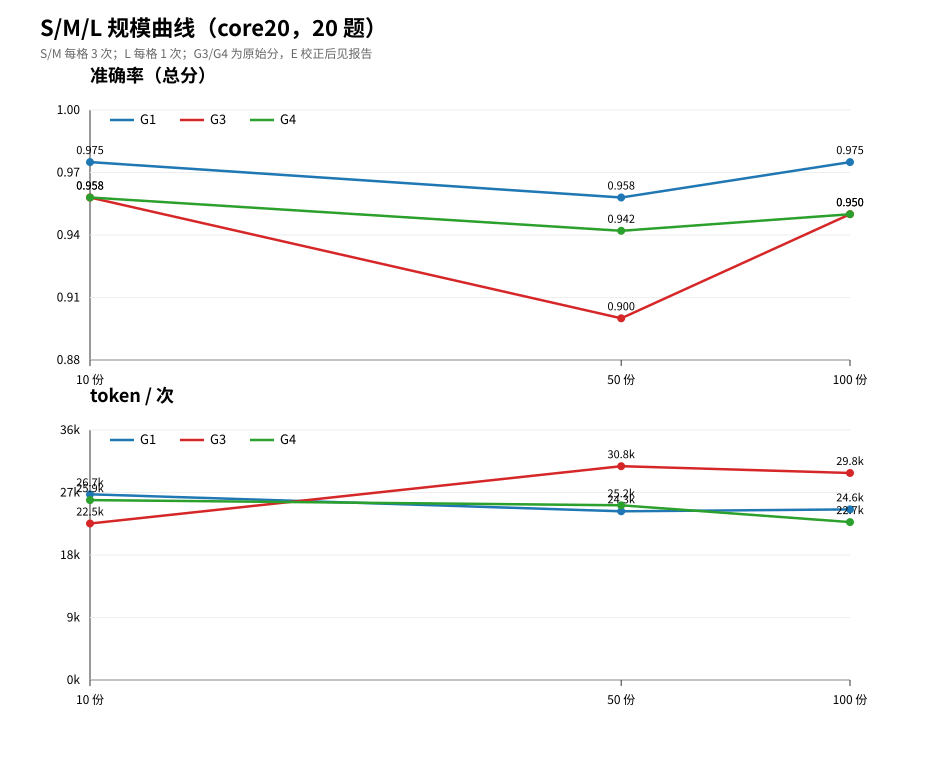

S10 / M50 / L100 公开年报摘要 · 163 题 · core20 试点
DeepSeek-V4.1-Flash · pi 1.4.0 · 30 分钟汇报
边界：不是 2000 份，不是 163 题全量；L 与 hybrid 为 1 次重复。
分题型看 CLI 与 RAG 的答对率、证据命中率。
token、工具次数、轮数、耗时、费用。
10 → 100 份怎么变；不扩 2000。
怎么搜、怎么读、压缩有没有害。
5. 结论：哪类任务用 CLI，哪类考虑 RAG，怎么混。
| 项 | 值 |
|---|---|
| pi | 1.4.0 |
| 被测模型 | deepseek/deepseek-flash |
| 上下文 / 采样 | 1M / temp=0, thinking=off |
| 判分 | Kimi A/B/C/E；V4 Pro D |
| 项 | 值 |
|---|---|
| 题集 | 163 题；core20 实验 |
| 重复 | S/M 3 次；L/hybrid 1 次 |
| 隔离 | 只读组 + 专用目录/guard |
| 主表口径 | 原始规则分 |
| 档 | 文档 | 字符 | 页 |
|---|---|---|---|
| S | 10 | 149k | 153 |
| M | 50 | 687k | 733 |
| L | 100 | 1.23M | 1,322 |
| 档 | G1 | G1+ | G2 | G3 | G4 |
|---|---|---|---|---|---|
| S | 0.975 | 0.950 | 0.967 | 0.958 | 0.958 |
| M | 0.958 | 0.933 | 0.967 | 0.900 | 0.942 |
| L | 0.975 | 0.950 | 0.975 | 0.950 | 0.950 |

只能说明 10→100 份；不能外推 2000 份。
| 组 | token/次 | 费用/次 |
|---|---|---|
| G1 | 24–27k | $0.0019–0.0028 |
| G3 M | 30.8k | $0.0033 |
| G0 M | 439k | $0.0031（cache_read） |
| G0 M（缓存 miss） | 439k | 约 $0.13 |
G0 必须同上下文连续跑；报告里不能把 $0.0031 当通用价。
| 档 | G3 dense | G3h hybrid | G4 dense | G4h hybrid |
|---|---|---|---|---|
| S | 0.958 | 0.875 | 0.958 | 0.925 |
| M | 0.900 | 0.925 | 0.942 | 0.950 |
| L | 0.950 | 0.950 | 0.950 | 0.950 |
轨迹：G3 q306 成功；G3 q375 E 规则偏差；G4 q364 长任务 199k token。
| 维度 | 命中 |
|---|---|
| 繁体查询 | 0/4 |
| 全角数字 | 1/2 |
| 去千分位/换单位 | 0/5 |
| 中文词间空格 | 1/3 |
真实 grep 0 命中率（41/678）
运行需要 ≥2 种 grep pattern
grep 是字面量匹配；Agent 靠换词规避，代价是更多轮次。
| 案例 | 压缩次数 | 质量 | 代价 |
|---|---|---|---|
| q364 | 2 | 0.83 → 1.00 | 127.7k token |
| q318 | 1 | 0.67 → 0.50 | 231.0k |
| q365 | 3 | 0.67 → 1.00 | 154.1k |
| q318 极早 | 12 | 0.67 → 0.50 | 293.4k / 348s |
G1：read / grep / find / ls；A/B/C/E，10–100 份。
grep 0 命中或同义词多时，再接 search_docs；k=5 起步。
G0 全文注入；默认全量 RAG；默认全工具混合。
Ollama 4B/7B：能连、能调工具，但 0.000；不进入正式表。
一句话：CLI 在 10–100 份够用；RAG 的价值要等更大规模才会显现。